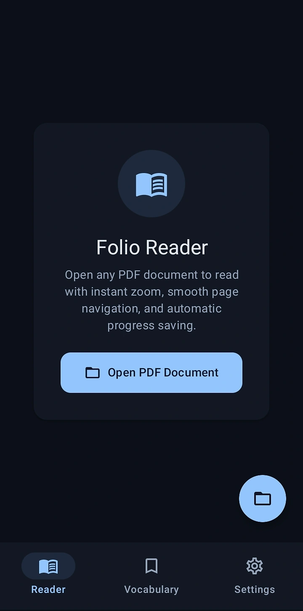
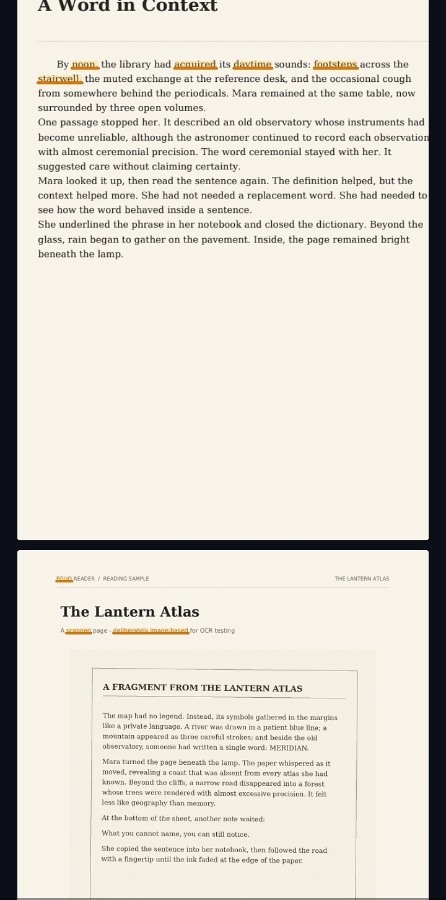
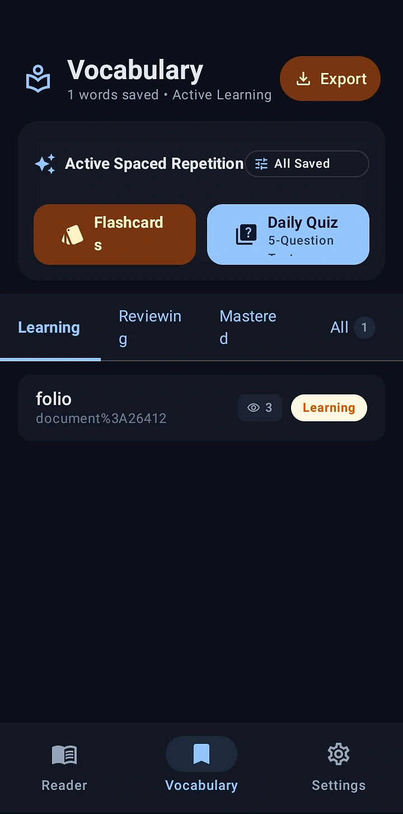
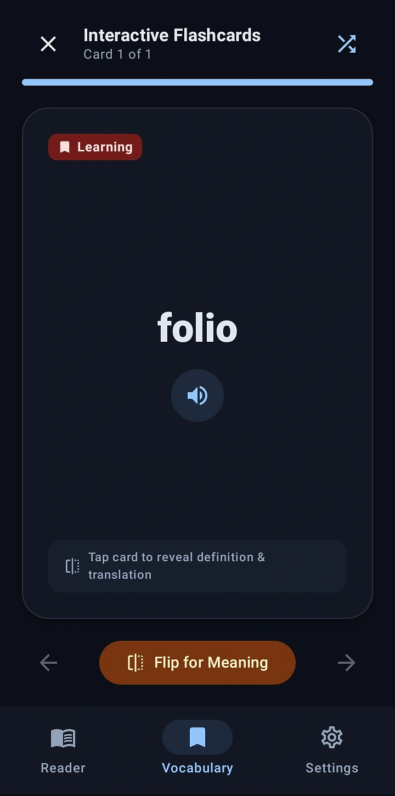
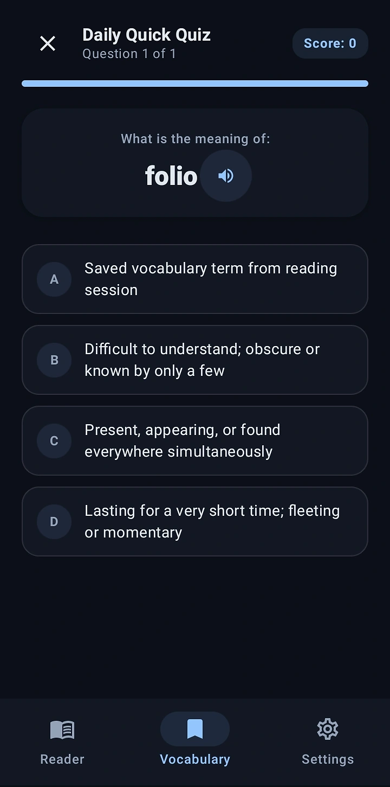
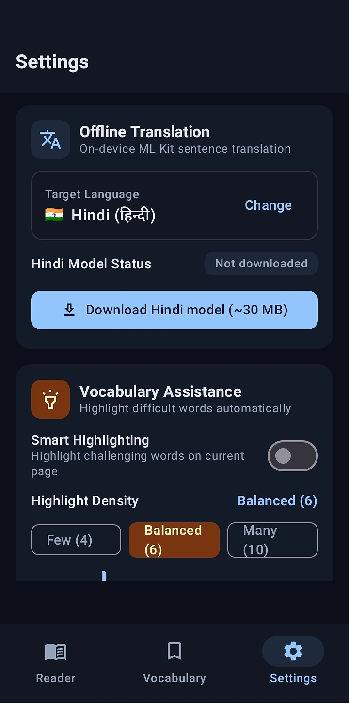
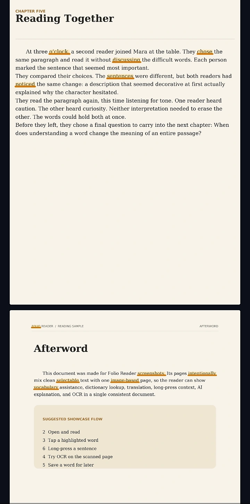

More than a PDF reader.
Folio Reader helps you read English PDFs, notice unfamiliar words, understand them in context, and turn useful vocabulary into something you can actually remember.

Start with the document.
Folio opens with a focused reader built for long-form documents. Open a PDF, pick up where you left off, and keep the reading experience uncluttered.

See useful words in context.
Smart Highlighting can surface challenging vocabulary directly on the page, so the next learning step starts exactly where the reading happens.
Build a vocabulary from what you actually read.
Saved words move into Folio's vocabulary system, where active spaced repetition, flashcards, and quick quizzes turn reading encounters into ongoing practice.


Review without making it feel like homework.
Interactive Flashcards let you flip for meaning and translation, while the learning state keeps review focused on the words you still need to master.
Test yourself with a quick quiz.
Daily Quick Quiz gives saved vocabulary another pass through short recall practice, helping reinforce words after you've left the page.


Keep the tools close, even without a connection.
Offline Translation supports Hindi on-device after the language model is downloaded, while Vocabulary Assistance and Smart Highlighting stay part of the same reading workflow.
One more page, one more useful word.
Folio is designed so the document remains the center of the experience. Learning tools appear when they're useful, then get out of the way again.

Built from the real app.
Every screen below comes from Folio Reader's actual interface, presented individually so the product stays recognizable.
Read first. Learn from what you read.
Folio Reader is designed around documents you already want to read — with learning tools layered into the reading experience.